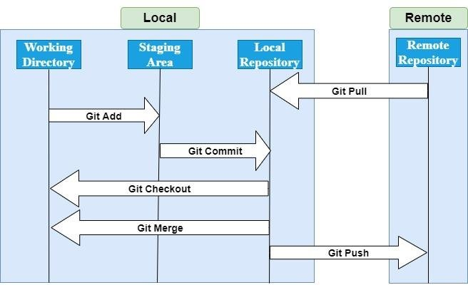

Git¶
Git is a distributed version control system that tracks versions of files as they evolve within a project folder.
It enables an individual developer to track their changes over time, performing undo operations where necessary, create “branches” where new development can be performed in isolation from the main code-line.
With an additional online repository it enables entire teams of developers to collaborate across a code-base, isolating individual’s contributions from one another until it’s safe to merge them all into a coherent and well maintained codebase.
In simple terms, if you’ve ever used Microsoft-Office’s “track changes” functionality in a document, it’s that, but with finer control, and across entire directories of files.
Installation¶
Installation instructions differ depending on your target device, but most machine architectures are supported.
Reference Links¶
Usage¶

Git Compatible Repositories¶
Whilst git can be used on its own to manage a local development, it really comes into its own when connected to a hosting platform/repository. This enables teams to collaborate on projects, pooling their activity and enabling distributed development.